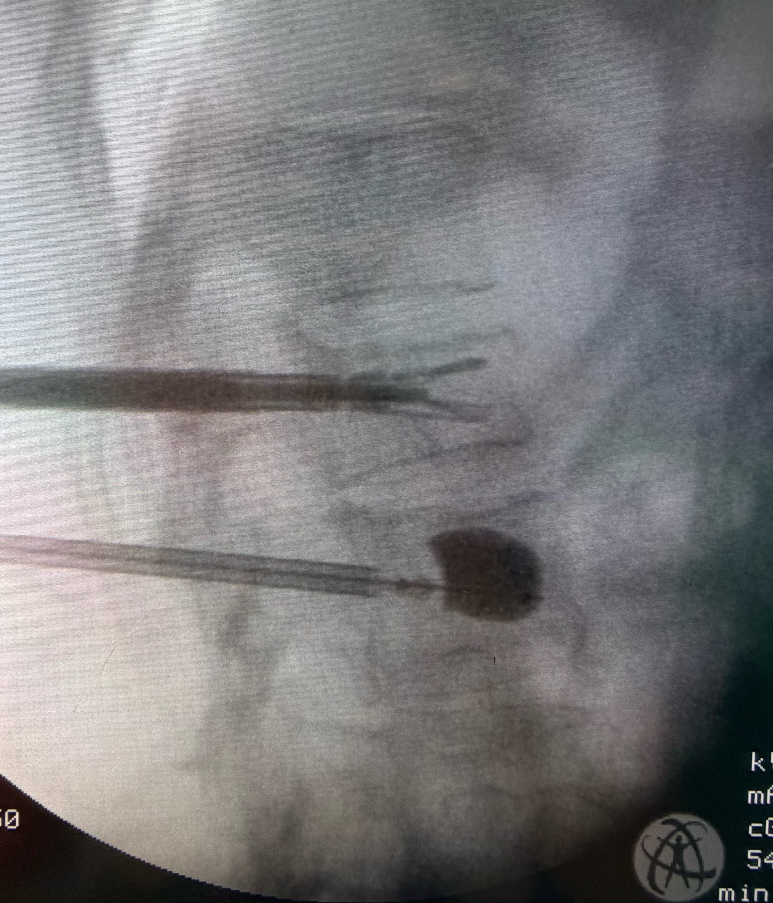

透過針孔大小的微創傷口，穩定骨折椎體，幫助長輩減少疼痛、重新站起來。
當脊椎因骨質疏鬆、跌倒或外傷發生壓迫性骨折時，最讓人害怕的不是影像上看到一節骨頭塌陷，而是痛到無法翻身、起床、站立，甚至因此長期臥床。
更需要注意的是，如果骨折持續塌陷、骨折處不穩定，或骨折碎片往神經管方向移位，就可能壓迫神經或脊髓，造成腳麻、腳無力、走路困難；嚴重時甚至有癱瘓風險。
對許多脊椎壓迫性骨折患者來說，微創骨水泥手術是一種幫助穩定骨折椎體、減少疼痛、恢復活動能力的治療方式。
治療重點不是單純「灌骨水泥」，而是透過影像導引，精準判斷骨折位置、塌陷程度與神經安全性，再選擇最適合的修復方式。
精準判斷、穩定骨折、重建支撐，幫助患者安全回到生活。
骨水泥手術有哪些方式？
骨水泥手術不是只有一種。
會依照椎體塌陷程度、骨折型態、疼痛時間、骨質條件與生活需求，選擇適合的治療方式。
1. 微創骨水泥椎體成形術
這是最常見的骨水泥手術方式。
醫師會在 X 光影像導引下，經由背部極小傷口，將醫療用骨水泥注入骨折椎體內。
骨水泥硬化後，可以幫助穩定骨折處，減少因骨折微動所造成的疼痛。
適合情況包括：
- 新鮮脊椎壓迫性骨折
- 疼痛位置與影像骨折位置相符
- 椎體塌陷程度較單純
- 保守治療後疼痛改善有限
- 痛到影響翻身、起床或走路
2. 氣囊椎體撐開術
氣囊撐開術是在注入骨水泥前，先將特製氣囊放入塌陷椎體內，慢慢撐開椎體，建立出空間後再填入骨水泥。
這種方式除了穩定骨折，也有機會改善部分椎體高度，並降低骨水泥直接高壓灌注時的滲漏風險。
3. 脊椎千斤頂椎體撐開術
脊椎千斤頂是針對椎體塌陷較明顯、結構支撐需求較高的患者所使用的進階微創治療方式。
和氣囊撐開術相比，氣囊是「撐開後取出，再填入骨水泥」；千斤頂則是「撐開後留下支架，再填入骨水泥」。
因此，對於椎體塌陷較明顯、希望重建高度
與支撐結構的患者，脊椎千斤頂在椎體高度恢復、局部駝背角度改善與結構支撐上，通常比單純氣囊撐開更有優勢。
相較於一般骨水泥或氣囊撐開，脊椎千斤頂的特色包括：
- 撐開後保留內部支撐結構
- 較能維持撐開後的椎體高度
- 有助於改善局部駝背角度
- 提供較好的椎體內部支撐
- 適合塌陷較明顯、需要高度與結構重建的患者
簡單來說：
骨水泥，是穩定骨折。
氣囊，是先撐開再填補。
千斤頂，是撐開後留下支撐，再加強穩定。
骨水泥術式快速比較
| 比較項目 | 微創骨水泥椎體成形術 | 氣囊椎體撐開術 | 脊椎千斤頂椎體撐開術 |
|---|---|---|---|
| 治療概念 | 骨水泥直接注入，穩定骨折椎體 | 氣囊撐開後，再填入骨水泥 | 撐開後留下支架，再填入骨水泥 |
| 支撐方式 | 骨水泥固定 | 骨水泥固定，並建立空腔 | 內部支架加骨水泥支撐 |
| 椎體高度改善 | 以穩定止痛為主 | 有機會部分改善高度 | 高度恢復與維持支撐較有優勢 |
| 局部駝背矯正 | 幫助有限 | 可部分改善 | 較適合需要角度矯正與結構重建者 |
| 適合對象 | 輕度至中度塌陷、新鮮骨折 | 中度塌陷、希望降低滲漏風險者 | 塌陷明顯、結構支撐需求較高者 |
| 傷口大小 | 約針孔大小傷口 | 小傷口微創方式 | 小傷口微創方式 |
| 費用概念 | 符合條件可評估健保給付或自費材料 | 多屬自費醫材 | 多屬自費醫材，依使用系統與節數而異 |
實際費用仍需依照醫院收費、健保條件、使用材料與治療節數評估。
骨水泥手術的優點
骨水泥手術最大的價值，是在適合的患者身上，幫助減少疼痛、穩定骨折，讓患者有機會早一點恢復活動。
常見優點包括：
- 傷口小：通常透過針孔或小傷口完成，對肌肉與組織破壞較少
- 疼痛改善快：穩定骨折後，可減少骨折微動造成的劇烈疼痛
- 多數不需全身麻醉：部分患者可在局部麻醉或輕度鎮靜下完成
- 恢復較快：多數患者術後可在醫師評估下，於隔日出院
- 降低臥床風險：避免因長期臥床造成肌力下降、肺炎、血栓或生活功能退化
對高齡長輩來說，治療重點不只是止痛，而是避免因為疼痛而長期躺床，失去原本的行動能力。
如果長輩已經痛到無法翻身、起床或走路，就不要只是一直忍耐。
讓專業醫師協助您判斷，才能選擇最適合的治療方式。
手術不是目的，重新回到生活才是目的。
把時間留給生活，不留給疼痛。